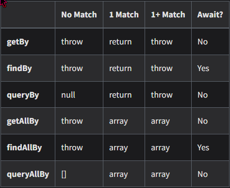
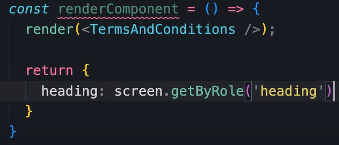

Einführung in Vitest ⚙️¶
Diese Dokumentation beschreibt, wie man Vitest zusammen mit React Hook Form einsetzt, um Unit-Tests für eine Formular-Komponente in einer React-Anwendung zu schreiben. Wir gehen detailliert auf die verschiedenen Tests ein, erklären, wann und warum bestimmte Methoden verwendet werden und wie man auf verschiedene Elemente der Komponente zugreifen kann.
Wichtige Konzepte¶
Bevor wir tiefer einsteigen, sollten einige grundlegende Konzepte geklärt werden:
Vitest: Ein schnelles Unit-Test-Framework, das speziell für moderne JavaScript-Frameworks wie React entwickelt wurde.
React Hook Form: Ein beliebtes Formular-Handling-Paket für React, das es ermöglicht, Formulare einfach zu erstellen und zu validieren.
TestWrapper: Eine Hilfskomponente, die React Hook Form in unseren Tests bereitstellt.
Wichtig
Die richtige Einrichtung und Nutzung von Hilfskomponenten wie TestWrapper ist entscheidend für das Testen von Formularen, da sie sicherstellt, dass alle Hook-Formulare korrekt gemanaged werden. 🎯
Vorgehen ⚙️¶
Beim Testen wird nach dem 3-Schritte-Prinzip vorgegangen 🚶
Arrange Vorbereitung und Initialisierung der notwendigen Voraussetzungen für den Test:
Testdaten oder Objekte erstellen
Testumgebung konfigurieren
Externe Abhängigkeiten (Mocks, Stubs, etc.) vorbereiten
// Beispiel: const calculator = new Calculator();
Act Ausführung der zu testenden Aktion:
Die spezifische Methode oder Funktion aufrufen
Interaktionen simulieren
// Beispiel: const result = calculator.add(5, 10);
Assert Überprüfung, ob das erwartete Ergebnis mit dem tatsächlichen Ergebnis übereinstimmt:
Ergebnisse validieren
Sicherstellen, dass der Test erfolgreich verläuft oder fehlgeschlagen ist
// Beispiel: expect(result).toBe(15);
Wichtige Gets 🕵️♂️¶
Beim Testen von UI-Komponenten gibt es verschiedene Möglichkeiten, um Elemente zu selektieren. Hier sind einige der wichtigsten Methoden, die häufig verwendet werden:
getByRole Sucht nach einem Element basierend auf seiner Rolle (z.B. Button, Checkbox, etc.).
Verwendung, wenn du nach spezifischen semantischen Rollen suchst.
// Beispiel: Suche nach einem Button-Element const submitButton = screen.getByRole('button', { name: /submit/i });
getByText Sucht nach einem Element, das einen bestimmten Text enthält.
Besonders nützlich, um Elemente anhand ihres sichtbaren Textinhalts zu finden.
// Beispiel: Suche nach einem Element mit Text "Login" const loginLink = screen.getByText('Login');
getByLabelText Sucht nach einem Formular-Element basierend auf seinem zugehörigen Label.
Optimal für Formularfelder wie Input, Textareas, etc.
// Beispiel: Suche nach einem Eingabefeld mit Label "Username" const usernameInput = screen.getByLabelText('Username');
getByPlaceholderText Sucht nach einem Input-Element, das den angegebenen Platzhaltertext enthält.
Hilfreich, wenn Labels nicht verfügbar sind, aber Platzhalter verwendet werden.
// Beispiel: Suche nach einem Input-Element mit Platzhalter "Passwort eingeben" const passwordInput = screen.getByPlaceholderText('Passwort eingeben');
getByTestId Sucht nach einem Element, das ein spezifisches data-testid Attribut besitzt.
Gut geeignet, um spezifische Elemente zu testen, die keine klaren Labels oder Texte haben.
// Beispiel: Suche nach einem Element mit Test-ID "submit-button" const submitButton = screen.getByTestId('submit-button');
Queries¶
Tests im Detail¶
1. Test: Überschrift wird korrekt gerendert 💡¶
Der erste Test überprüft, ob die Überschrift „Kundendaten“ korrekt angezeigt wird. Hier ein Beispiel, wie man die Komponente rendert und dann die Überschrift im DOM sucht:
describe('CustomerData.tsx', () => {
test('renders subheading "Kundendaten"', () => {
render(
<TestWrapper>
<CustomerData />
</TestWrapper>
);
const headingElement = screen.getByText(/Kundendaten/i);
expect(headingElement).toBeInTheDocument();
});
});
Tipp
screen.getByText(): Diese Methode durchsucht den DOM nach einem Textinhalt, der dem übergebenen Wert entspricht. Hier wird nach „Kundendaten“ gesucht.
expect(…).toBeInTheDocument(): Überprüft, ob das Element wirklich im DOM existiert.
Wenn du eine Überschrift oder einen bestimmten Text in deiner Komponente testen möchtest, ist dies die einfachste und präziseste Methode. 🎯
2. Test: Alle Eingabefelder werden korrekt gerendert 📋¶
Dieser Test überprüft, ob alle erwarteten Eingabefelder (z.B. Kundennummer, Vorname, Nachname) vorhanden sind. Es wird eine Liste von Feldbezeichnern durchsucht und jedes dieser Felder im DOM überprüft:
test('renders all input fields', () => {
render(
<TestWrapper>
<CustomerData />
</TestWrapper>
);
const fields = [
{ label: /Kundennummer/i },
{ label: /Vorname/i },
{ label: /Nachname/i },
{ label: /Geburtsdatum/i },
{ label: /Straße und Hausnummer/i },
{ label: /PLZ/i },
{ label: /Stadt/i },
{ label: /Land/i },
{ label: /Telefon/i },
{ label: /E-Mail Adresse/i },
];
fields.forEach(({ label }) => {
const field = screen.getByLabelText(label);
expect(field).toBeInTheDocument();
});
});
Tipp
screen.getByLabelText(): Hier wird nach Eingabefeldern gesucht, die mit einem bestimmten Label (z.B. „Vorname“) assoziiert sind.
Die Verwendung von Regex (/Vorname/i) macht die Suche nach Labels flexibler, da Groß- und Kleinschreibung ignoriert werden.
Dieser Test stellt sicher, dass das Formular alle erforderlichen Felder korrekt rendert, was für die Benutzerfreundlichkeit des Formulars entscheidend ist. 📄
3. Test: Hilfetext für Kundennummer 📝¶
Der dritte Test prüft, ob der richtige Hilfetext für das Feld „Kundennummer“ angezeigt wird, falls der Benutzer noch keine Kundennummer besitzt. Dieser Text informiert den Benutzer, was zu tun ist, wenn er keine gültige Nummer hat.
test('testing for customerNumber helperText', () => {
render(
<TestWrapper>
<CustomerData />
</TestWrapper>
);
const customerNumberHelperText = screen.getByText(
/Falls keine vorhanden, „NEU“ eingeben. Bitte nachreichen./i
);
expect(customerNumberHelperText).toBeInTheDocument();
});
Bemerkung
screen.getByText(): Hier wird erneut nach einem Textinhalt gesucht, in diesem Fall der Hinweistext für das Kundennummernfeld.
Hilfetexte sind wichtig, um Benutzer bei der Eingabe ihrer Daten zu unterstützen und Missverständnisse zu vermeiden. 😊
Warum ist das wichtig? Dieser Test stellt sicher, dass der Benutzer bei der Eingabe seiner Daten die richtigen Anweisungen erhält. Wenn Benutzer unklare oder fehlende Anweisungen sehen, könnten sie Fehler machen, was zu Problemen in der Datenverarbeitung führen könnte. 🛠️
Testaufbau und wichtige Hilfsmittel ⛑️¶
TestWrapper: Der TestWrapper wird verwendet, um React Hook Form in den Tests zu integrieren. Da React Hook Form auf interne Formulareinstellungen zugreift, müssen diese auch während der Tests korrekt bereitgestellt werden. Der TestWrapper stellt sicher, dass alle Formulareinstellungen während der Testlaufzeit verfügbar sind.
const TestWrapper = ({ children }: { children: ReactNode }) => {
const methods = useForm();
return <FormProvider {...methods}>{children}</FormProvider>;
};
Wichtig
Ohne den TestWrapper könnten viele Formular-bezogene Tests fehlschlagen, da die Formulare nicht korrekt initialisiert wären.
screen.debug(): Diese Funktion gibt den aktuellen DOM-Baum im Test-Output aus. Es ist ein nützliches Werkzeug, wenn du dich wunderst, warum ein bestimmtes Element im Test nicht gefunden wird. Durch den DOM-Output kannst du schnell erkennen, ob das Element tatsächlich existiert oder warum es nicht gefunden wurde.
Tipp
Benutze screen.debug(), um einen Blick auf den DOM zu werfen, wenn etwas nicht wie erwartet funktioniert. Das erleichtert die Fehlersuche erheblich. 🔍
Fazit¶
Das Testen von Formularen und Komponenten mit Vitest und React Hook Form ermöglicht es dir, sicherzustellen, dass deine Benutzeroberflächen wie erwartet funktionieren. Durch gezielte Tests auf Überschriften, Eingabefelder und Hilfetexte kannst du sicherstellen, dass das Formular korrekt funktioniert und die Benutzer klare Anweisungen erhalten.
Für weitere Informationen über Vitest und dessen Einsatzmöglichkeiten kannst du die offizielle Dokumentation unter https://vitest.dev/ besuchen. 🎉
Der Tipp mit RenderComponent 💡¶
Die Funktion renderComponent ist eine bewährte Methode, um eine Komponente in einer Testumgebung mit den notwendigen Wrappern bereitzustellen. Dies ermöglicht es dir, die Komponente in isolierten Tests zu rendern und gleichzeitig den Kontext oder Provider (wie Redux oder React Router) zu berücksichtigen.
const renderComponent = () => {
render(
<TestWrapper>
<CompanyData />
</TestWrapper>
);
};
Vorteile:
Wiederverwendbarkeit: Diese Funktion kann in mehreren Tests verwendet werden, um Konsistenz zu gewährleisten und Redundanz zu vermeiden.
Testkontext: Der Einsatz eines Wrappers wie TestWrapper erlaubt es dir, globale Kontexte (z.B. Thema, Zustand) für deine Komponente bereitzustellen, was für tiefere Integrationstests notwendig ist.
Saubere Struktur: Durch das Auslagern der Rendering-Logik in eine Hilfsfunktion bleibt der eigentliche Testcode klar und fokussiert auf das Verhalten der Komponente.
Beispielnutzung in einem Test:
test('renders company data correctly', () => {
renderComponent();
const companyName = screen.getByText(/Company Name/i);
expect(companyName).toBeInTheDocument();
});
Dieser Ansatz stellt sicher, dass die Komponente in einer kontrollierten Umgebung gerendert wird und erleichtert die Testbarkeit komplexer Szenarien.
